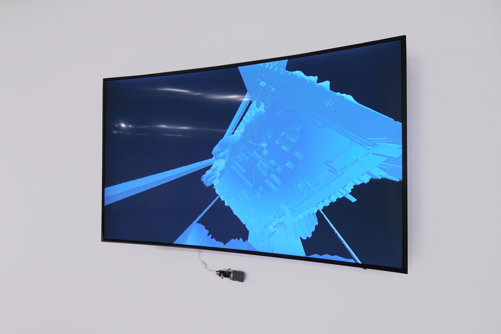
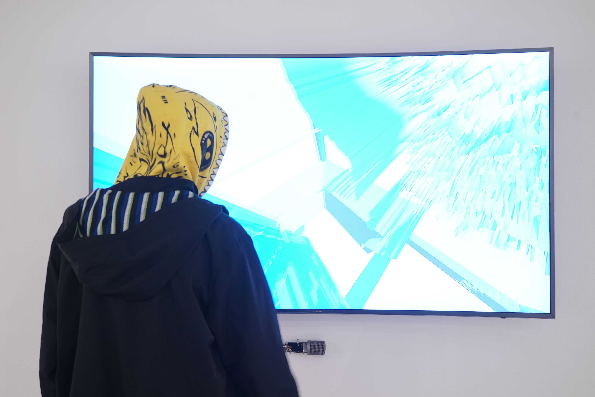
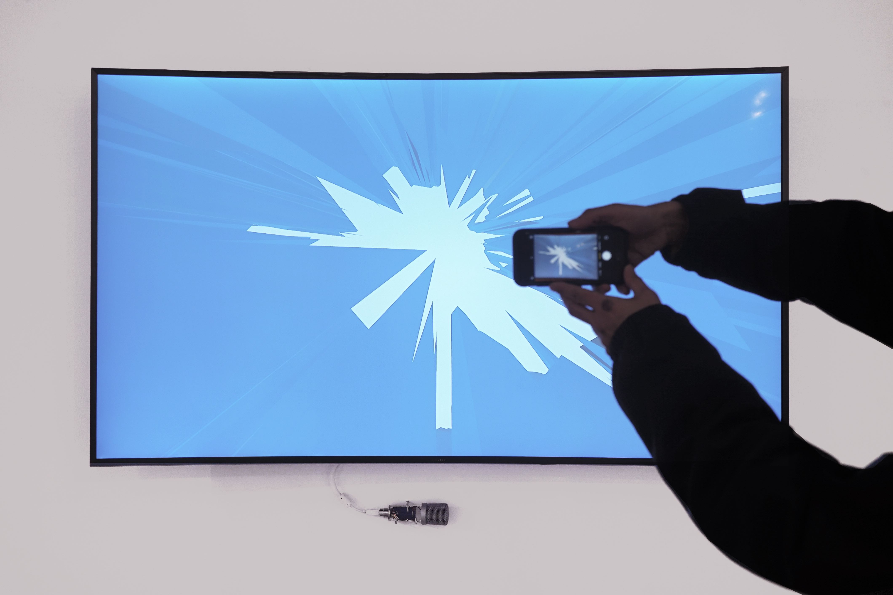
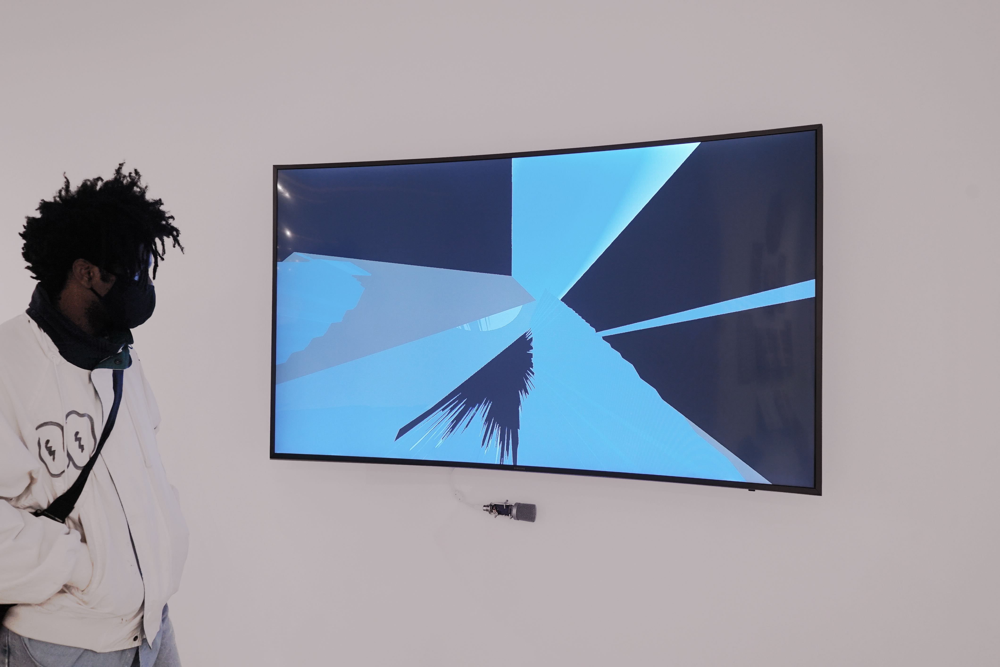
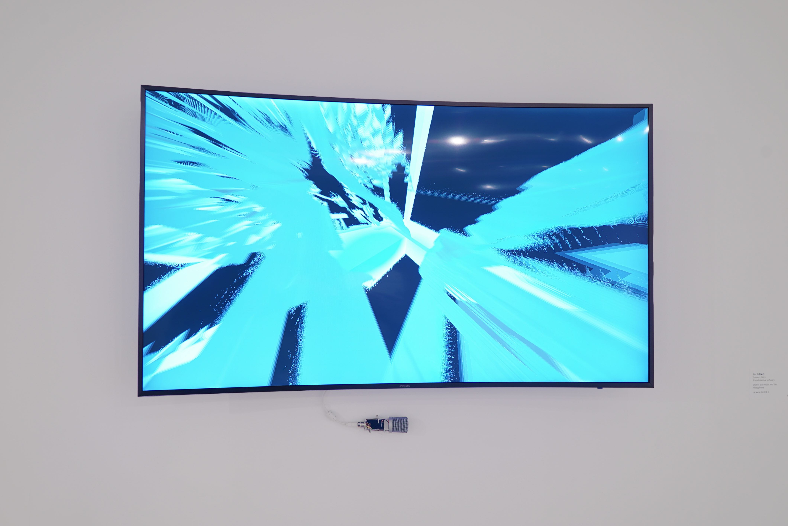
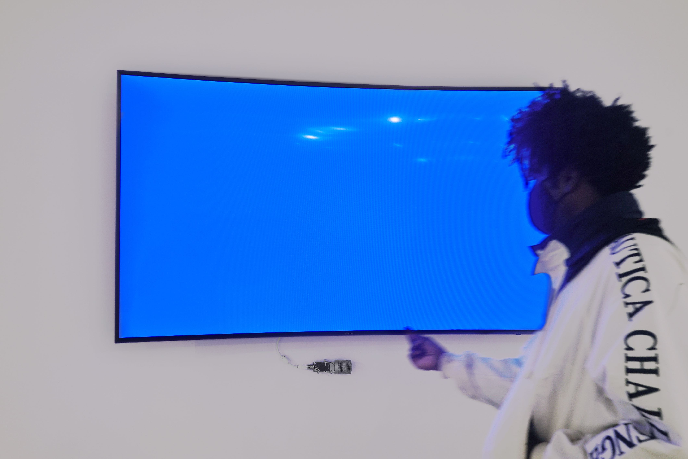
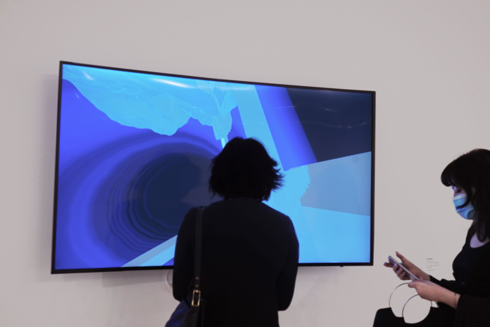
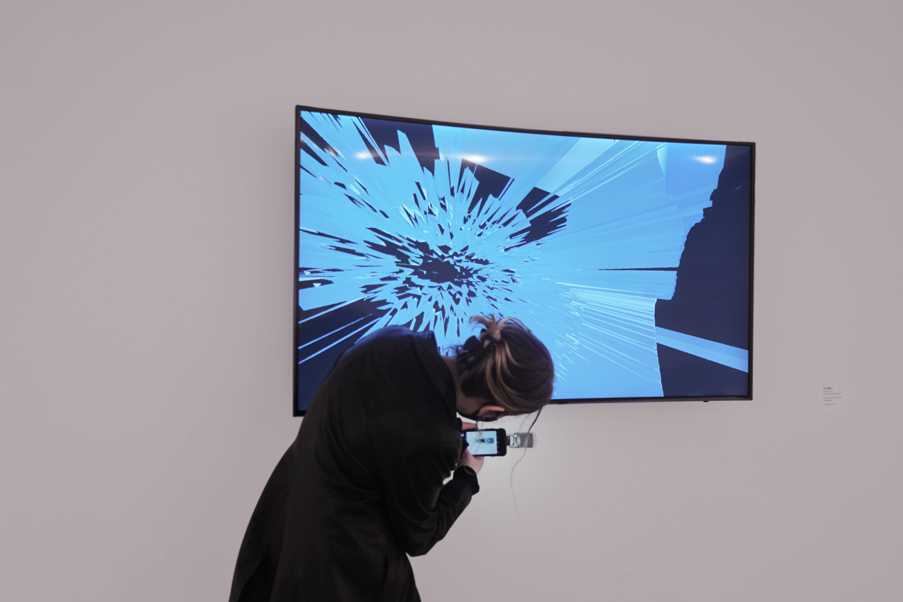
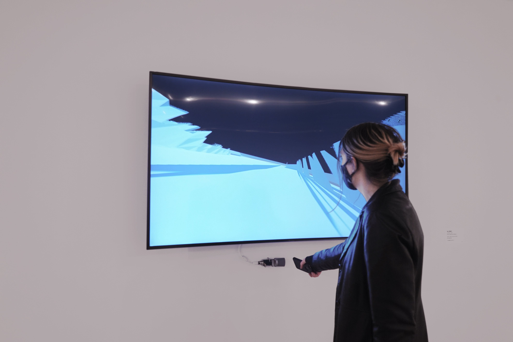
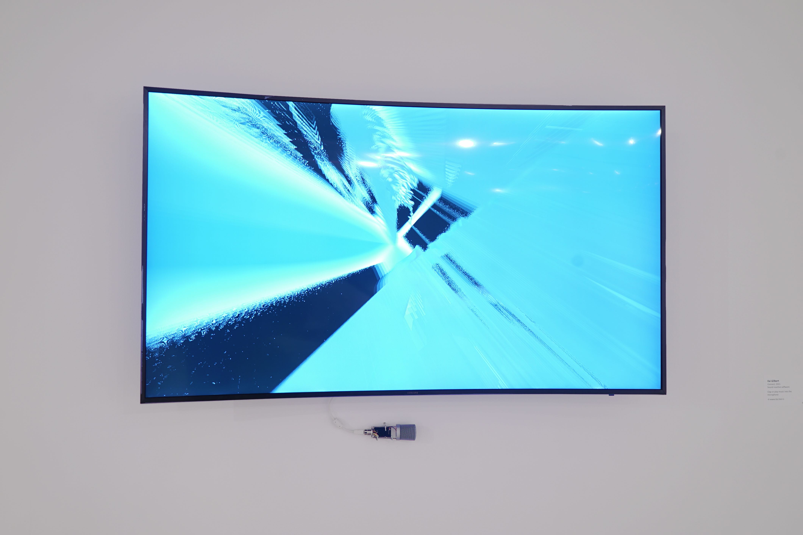

interactive art software/soundware
shown at the SAIC BFA thesis show 2021
each time the program is activated via sound,
a statistically unique perspective emerges
using 3D models sourced from the original
plastic city animation
self patcher,
the
connect software takes sound input
and interpolates into a new location, rotation, and FOV
2019-2021-...